Matbiips example: Stochastic volatility
In this example, we consider the stochastic volatility model SV0 for application e.g. in finance.
Reference: S. Chib, F. Nardari, N. Shepard. Markov chain Monte Carlo methods for stochastic volatility models. Journal of econometrics, vol. 108, pp. 281-316, 2002.
Contents
Statistical model
The stochastic volatility model is defined as follows
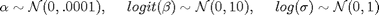
and for 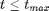
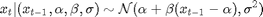
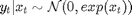
where 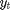 is the response variable and 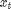 is the unobserved log-volatility of . 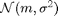 denotes the normal distribution of mean 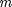 and variance 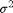.
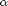, 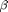 and 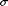 are unknown parameters that need to be estimated.
Statistical model in BUGS language
Content of the file 'stoch_volatility.bug':
model_file = 'stoch_volatility.bug'; % BUGS model filename type(model_file);
# Stochastic volatility model SV_0
# Reference: S. Chib, F. Nardari, N. Shepard. Markov chain Monte Carlo methods
# for stochastic volatility models. Journal of econometrics, vol. 108, pp. 281-316, 2002.
var y[t_max], x[t_max], prec_y[t_max]
data
{
x_true[1] ~ dnorm(0, 1/sigma_true^2)
prec_y_true[1] <- exp(-x_true[1])
y[1] ~ dnorm(0, prec_y_true[1])
for (t in 2:t_max)
{
x_true[t] ~ dnorm(alpha_true + beta_true*(x_true[t-1]-alpha_true), 1/sigma_true^2)
prec_y_true[t] <- exp(-x_true[t])
y[t] ~ dnorm(0, prec_y_true[t])
}
}
model
{
alpha ~ dnorm(0,10000)
logit_beta ~ dnorm(0,.1)
beta <- ilogit(logit_beta)
log_sigma ~ dnorm(0, 1)
sigma <- exp(log_sigma)
x[1] ~ dnorm(0, 1/sigma^2)
prec_y[1] <- exp(-x[1])
y[1] ~ dnorm(0, prec_y[1])
for (t in 2:t_max)
{
x[t] ~ dnorm(alpha + beta*(x[t-1]-alpha), 1/sigma^2)
prec_y[t] <- exp(-x[t])
y[t] ~ dnorm(0, prec_y[t])
}
}
Installation of Matbiips
- Download the latest version of Matbiips
- Unzip the archive in some folder
- Add the Matbiips folder to the Matlab search path
matbiips_path = '../../matbiips';
addpath(matbiips_path)
General settings
set(0, 'DefaultAxesFontsize', 14); set(0, 'Defaultlinelinewidth', 2); light_blue = [.7, .7, 1]; % Set the random numbers generator seed for reproducibility if isoctave() || verLessThan('matlab', '7.12') rand('state', 0) else rng('default') end
Load model and load or simulate data
sample_data = true; % Simulated data or SP500 data t_max = 100; if ~sample_data % Load the data T = readtable('SP500.csv', 'delimiter', ';'); y = diff(log(T.Close(end:-1:1))); SP500_date_str = T.Date(end:-1:2); ind = 1:t_max; y = y(ind); SP500_date_str = SP500_date_str(ind); SP500_date_num = datenum(SP500_date_str); end
Model parameters
if ~sample_data data = struct('t_max', t_max, 'y', y); else sigma_true = .4; alpha_true = 0; beta_true = .99; data = struct('t_max', t_max, 'sigma_true', sigma_true,... 'alpha_true', alpha_true, 'beta_true', beta_true); end
Compile BUGS model and sample data if simulated data
model = biips_model(model_file, data, 'sample_data', sample_data);
data = model.data;
* Parsing model in: stoch_volatility.bug * Compiling data graph Declaring variables Resolving undeclared variables Allocating nodes Graph size: 706 Sampling data Reading data back into data table * Compiling model graph Declaring variables Resolving undeclared variables Allocating nodes Graph size: 715
Plot the data
figure('name', 'Log-returns') if sample_data plot(1:t_max, data.y) title('Observed data') xlabel('Time') else plot(SP500_date_num, data.y) title('Observed data: S&P 500') datetick('x', 'mmmyyyy', 'keepticks') xlabel('Date') end ylabel('Log-return') box off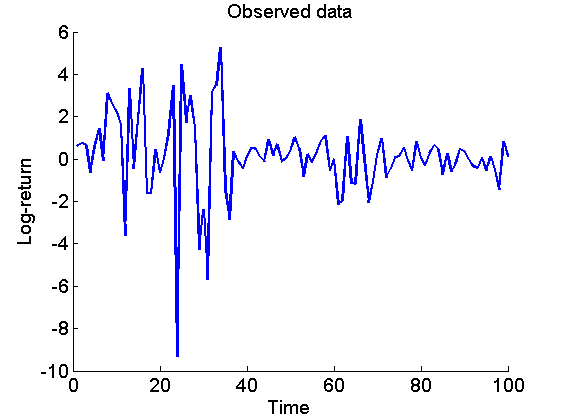
Biips Particle Marginal Metropolis-Hastings
We now use Biips to run a Particle Marginal Metropolis-Hastings in order to obtain posterior MCMC samples of the parameters , and , and of the variables 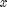.
Parameters of the PMMH
n_burn = 5000; % nb of burn-in/adaptation iterations n_iter = 10000; % nb of iterations after burn-in thin = 5; % thinning of MCMC outputs n_part = 50; % nb of particles for the SMC param_names = {'alpha', 'logit_beta', 'log_sigma'}; % names of the variables updated with MCMC (others are updated with SMC) latent_names = {'x'}; % names of the variables updated with SMC and that need to be monitored
Init PMMH
inits = {0, 5, -2};
obj_pmmh = biips_pmmh_init(model, param_names, 'inits', inits,...
'latent_names', latent_names);
* Initializing PMMH
Run PMMH
obj_pmmh = biips_pmmh_update(obj_pmmh, n_burn, n_part); % adaptation and burn-in iterations [obj_pmmh, out_pmmh, log_marg_like_pen, log_marg_like] = biips_pmmh_samples(obj_pmmh, n_iter, n_part,... 'thin', thin); % Samples
* Adapting PMMH with 50 particles |--------------------------------------------------| 100% |++++++++++++++++++++++++++++++++++++++++++++++++++| 5000 iterations in 203.25 s * Generating 2000 PMMH samples with 50 particles |--------------------------------------------------| 100% |**************************************************| 10000 iterations in 381.09 s
Some summary statistics
summ_pmmh = biips_summary(out_pmmh, 'probs', [.025, .975]);
Compute kernel density estimates
kde_pmmh = biips_density(out_pmmh);
Posterior mean and credible interval of the parameters
for i=1:numel(param_names) summ_param = getfield(summ_pmmh, param_names{i}); fprintf('Posterior mean of %s: %.3f\n', param_names{i}, summ_param.mean); fprintf('95%% credible interval of %s: [%.3f, %.3f]\n',... param_names{i}, summ_param.quant{1}, summ_param.quant{2}); end
Posterior mean of alpha: 0.000 95% credible interval of alpha: [-0.020, 0.020] Posterior mean of logit_beta: 3.309 95% credible interval of logit_beta: [1.521, 7.178] Posterior mean of log_sigma: -0.571 95% credible interval of log_sigma: [-1.009, -0.110]
Trace of MCMC samples for the parameters
if sample_data param_true = [alpha_true, log(data.beta_true/(1-data.beta_true)), log(sigma_true)]; end param_lab = {'\alpha', 'logit(\beta)', 'log(\sigma)'}; for k=1:numel(param_names) figure('name', 'PMMH: Trace samples parameter') samples_param = getfield(out_pmmh, param_names{k}); plot(samples_param, 'linewidth', 1) if sample_data hold on plot(0, param_true(k), '*g'); end xlabel('Iteration') ylabel(param_lab{k}) title(param_lab{k}) box off legend boxoff end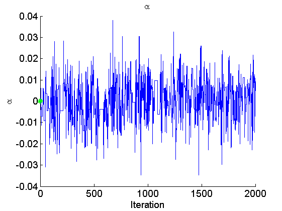 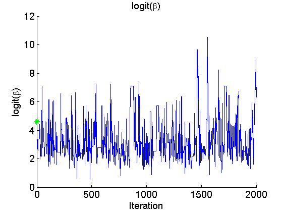 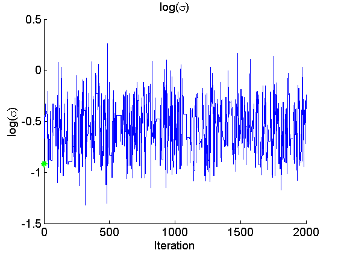
Histogram and KDE estimate of the posterior for the parameters
for k=1:numel(param_names) figure('name', 'PMMH: Histogram posterior parameter') samples_param = getfield(out_pmmh, param_names{k}); hist(samples_param, 15) h = findobj(gca, 'Type', 'patch'); set(h, 'EdgeColor', 'w') if sample_data hold on plot(param_true(k), 0, '*g'); end xlabel(param_lab{k}) ylabel('Number of samples') title(param_lab{k}) box off legend boxoff end for k=1:numel(param_names) figure('name', 'PMMH: KDE estimate posterior parameter') kde_param = getfield(kde_pmmh, param_names{k}); plot(kde_param.x, kde_param.f) if sample_data hold on plot(param_true(k), 0, '*g'); end xlabel(param_lab{k}) ylabel('Posterior density') title(param_lab{k}) box off legend boxoff end
 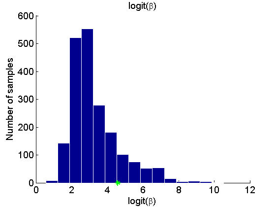 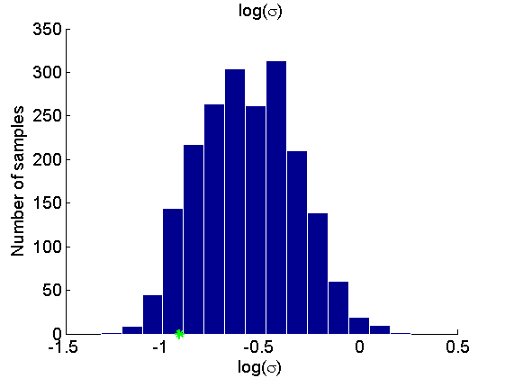 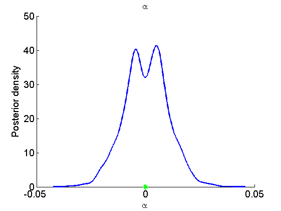 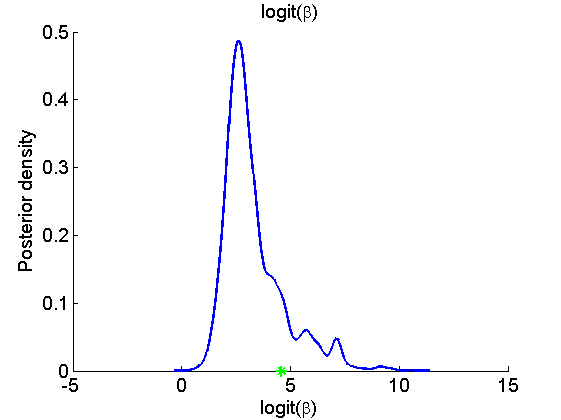 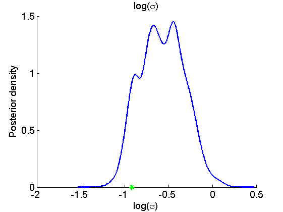
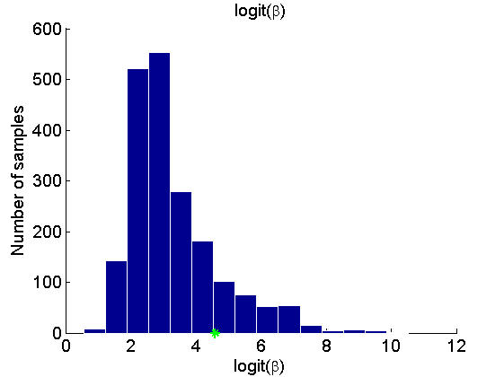 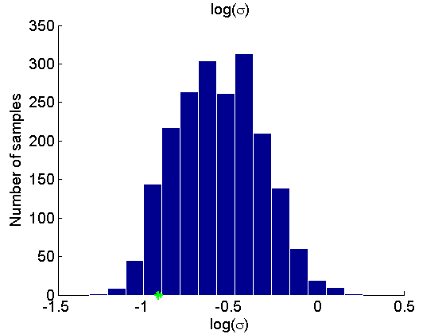 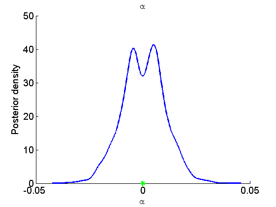 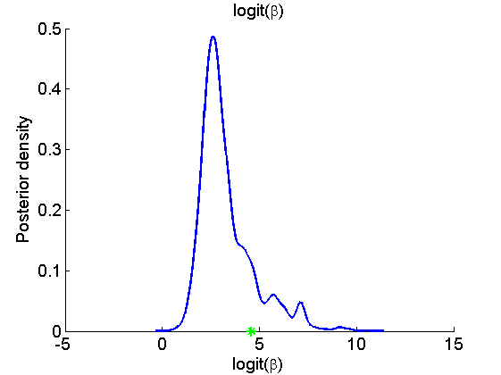 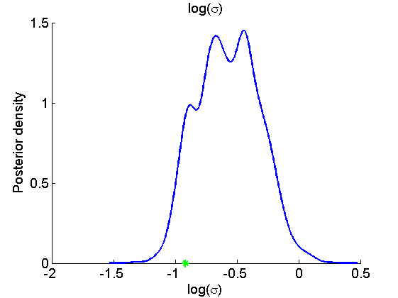 Posterior mean and quantiles for x
figure('name', 'PMMH: Posterior mean and quantiles') x_pmmh_mean = summ_pmmh.x.mean; x_pmmh_quant = summ_pmmh.x.quant; h = fill([1:t_max, t_max:-1:1], [x_pmmh_quant{1}; flipud(x_pmmh_quant{2})], 0); set(h, 'edgecolor', 'none', 'facecolor', light_blue) hold on plot(1:t_max, x_pmmh_mean, 'linewidth', 3) if sample_data plot(1:t_max, data.x_true, 'g') legend({'95% credible interval', 'PMMH mean estimate', 'True value'}) else legend({'95% credible interval', 'PMMH mean estimate'}) end xlabel('Time') ylabel('Log-volatility') box off legend boxoff

Trace of MCMC samples for x
figure('name', 'PMMH: Trace samples x') time_index = [5, 10, 15]; for k=1:numel(time_index) tk = time_index(k); subplot(2, 2, k) plot(out_pmmh.x(tk, :), 'linewidth', 1) if sample_data hold on plot(0, data.x_true(tk), '*g'); end xlabel('Iteration') ylabel(['x_{', num2str(tk), '}']) title(['t=', num2str(tk)]); box off end if sample_data h = legend({'PMMH samples', 'True value'}); set(h, 'position', [0.7, 0.25, .1, .1]) legend boxoff end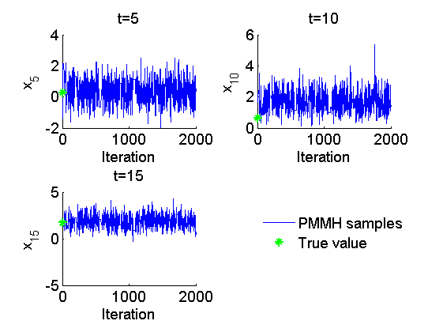
Histogram and kernel density estimate of posteriors of x
figure('name', 'PMMH: Histograms marginal posteriors') for k=1:numel(time_index) tk = time_index(k); subplot(2, 2, k) hist(out_pmmh.x(tk, :), 15); h = findobj(gca, 'Type', 'patch'); set(h, 'EdgeColor', 'w') if sample_data hold on plot(data.x_true(tk), 0, '*g'); end xlabel(['x_{', num2str(tk), '}']); ylabel('Number of samples'); title(['t=', num2str(tk)]); box off end if sample_data h = legend({'Smoothing density', 'True value'}); set(h, 'position', [0.7, 0.25, .1, .1]) legend boxoff end figure('name', 'PMMH: KDE estimates marginal posteriors') for k=1:numel(time_index) tk = time_index(k); subplot(2, 2, k) plot(kde_pmmh.x(tk).x, kde_pmmh.x(tk).f); if sample_data hold on plot(data.x_true(tk), 0, '*g'); end xlabel(['x_{', num2str(tk), '}']); ylabel('Posterior density'); title(['t=', num2str(tk)]); box off end if sample_data h = legend({'Posterior density', 'True value'}); set(h, 'position', [0.7, 0.25, .1, .1]) legend boxoff end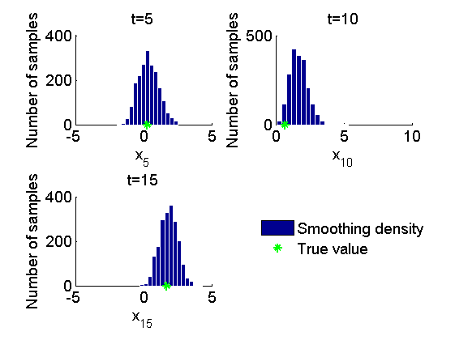 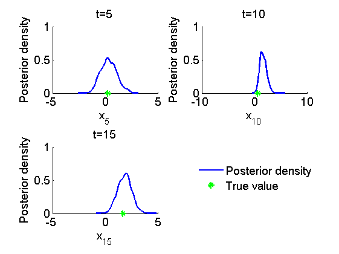
Clear model
biips_clear()